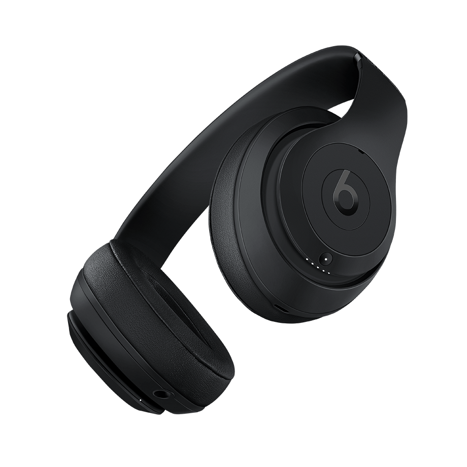

Beats Studio
Casque d'écoute circumauriculaire entièrement sans fil avec annulation active du bruit

Optimisé par la puce H1 d’Apple:
La puce W1 d’Apple assure une configuration parfaite et le passage entre vos appareils
Apple§.
Vous pouvez donc bouger librement, écouter votre musique sans interruption et rester productif
toute la journée.
Conçu pour vous: Le casque d'écoute Studio3 sans fil est conçu pour un confort supérieur toute la journée. La conception globale allie légèreté, résistance et confort pour que vous puissiez vous plonger dans la musique.
Compatible avec iOS et Android: Connexion facile aux appareils Android au moyen de la technologie BluetoothMD dès la sortie de l’emballage.
Une autonomie de 22h: Le casque sans fil Studio3 de Beats est prêt à vous suivre toute la journée : il assure un confort prolongé digne de son impressionnante autonomie. Avec Fast Fuel, quand la batterie est faible, dix minutes de recharge rapide procurent trois heures d’écoute
Conçu pour vous: Le casque d'écoute Studio3 sans fil est conçu pour un confort supérieur toute la journée. La conception globale allie légèreté, résistance et confort pour que vous puissiez vous plonger dans la musique.
Compatible avec iOS et Android: Connexion facile aux appareils Android au moyen de la technologie BluetoothMD dès la sortie de l’emballage.
Une autonomie de 22h: Le casque sans fil Studio3 de Beats est prêt à vous suivre toute la journée : il assure un confort prolongé digne de son impressionnante autonomie. Avec Fast Fuel, quand la batterie est faible, dix minutes de recharge rapide procurent trois heures d’écoute
Une Grande Gamme De Couleur
Il y a une multitude de couleurs, personnalisez-les à votre goût
Contenu de l'emballage
- Casque Beats Studio3 sans fil
- Étui de transport
- Câble RemoteTalk de 3,5 mm
- Câble de recharge USB universel
- Guide de démarrage rapide
- Carte de garantie